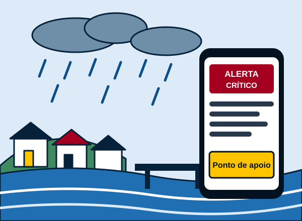

Quem sofre
Famílias de bairros de baixada e encosta, idosos, crianças e pessoas com mobilidade reduzida.
O AlertaBairro transforma a previsão de chuva em um aviso simples, por bairro, que chega por SMS ou pela web — mesmo para quem tem pouca internet.

Persona ilustrativa. Ela vive perto de um córrego que transborda a cada chuva forte, usa um celular simples com pouco pacote de dados e cuida de um neto pequeno. Quando a água sobe, ela descobre tarde demais.
Famílias de bairros de baixada e encosta, idosos, crianças e pessoas com mobilidade reduzida.
Um aviso claro, no tempo certo, dizendo o que fazer e para onde ir — sem depender de internet boa.
Sair de casa com segurança, levar os documentos e saber qual é o ponto de apoio mais próximo.
8.270.127
pessoas viviam em áreas de risco de enchentes e deslizamentos em 872 municípios brasileiros monitorados, em 2010. Cerca de 17,8% delas eram crianças e idosos.
Fonte: IBGE e Cemaden, População em áreas de risco no Brasil (2018, dados do Censo 2010).
O sistema cruza a chuva prevista com as características de cada bairro e avisa os moradores com instruções práticas.
Chuva prevista, proximidade de rio, altitude e vulnerabilidade social viram um índice de 0 a 100.
A mensagem sai por SMS ou pela web, com nível de alerta, o que fazer e o ponto de apoio.
O SMS chega mesmo sem pacote de dados, e a página tem alto contraste e letra ajustável.
Reduz perdas humanas e materiais em desastres e protege quem vive em áreas vulneráveis.
Ajuda comunidades a se adaptarem a chuvas extremas, cada vez mais frequentes.
Evita mortes e ferimentos e reduz doenças ligadas a enchentes, como a leptospirose.
Prioriza bairros com maior vulnerabilidade e pessoas com mobilidade reduzida.
Usa dados e comunicação simples para criar infraestrutura de alerta acessível.